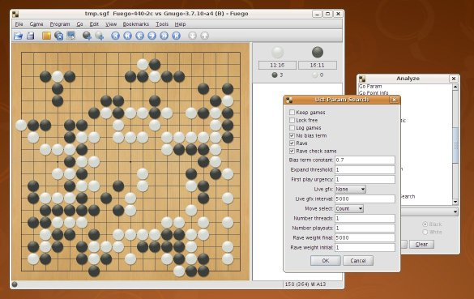

Fuego

Fuego is a collection of C++ libraries for developing software for the
game of Go. It includes a Go player using Monte-Carlo tree search.
The initial version of the code was released by the
Computer Go Group at
the University of Alberta and is based in parts on the previous projects
Smart Game Board and
Explorer.
Fuego is available under the terms of the
GNU Lesser General Public License.
Documentation
-
Developer documentation
(current development snapshot)
-
Interested in the current ongoing Fuego development?
Fuego trac has many suggested
tickets describing work that would improve Fuego.
-
A Fuego wiki
is slowly being built up currently. It will contain additional useful information
which is not contained in the release documentation. Examples are: frequently
asked questions (FAQ), description
and documentation of experiments, games played by Fuego, useful scripts.
-
Fuego Go: the missing manual
by Grace Lin contains a detailed
study of what happens on the code level when Fuego is run.
Publications
-
M. Enzenberger and M. Müller.
Fuego
- an open-source framework for board games and Go engine
based on Monte-Carlo tree search.
Technical Report TR 09-08, Dept. of Computing Science. University of
Alberta, Edmonton, Alberta, Canada, 2009.
-
M. Enzenberger and M. Müller.
A
lock-free
multithreaded Monte-Carlo tree search algorithm.
Advances in Computer Games 12, Pamplona, Spain, 2009.
-
M. Müller.
Fuego at the
Computer Olympiad in Pamplona 2009
: a tournament report.
Technical Report TR 09-09, Dept. of Computing Science. University of
Alberta, Edmonton, Alberta, Canada, 2009.
Bug reports
Please report bugs in the release and development versions of Fuego
to the
fuego-devel
mailing list, or
submit a ticket to the
Fuego trac bug tracking system.
Games Against Humans
Human vs. Computer Program Competition (FUZZ-IEEE 2009)
At this event,
held August 21-22 2009 on Jeju Island, Korea,
Fuego played a total of three official games.
Two were 9x9 games
against the top-rank (9 Dan) professional
player Zhou Junxun (his name is also transliterated as Chou Chun-
Hsun). Fuego won the first game
playing white against Mr. Zhou by 2.5 points.
It is the first time that a computer program has won a 9x9 game
on even against a top-ranked player, so this represents a milestone
for Computer Go.
Fuego lost the second game against Mr. Zhou, playing Black.
In the final official game, Fuego got an upset win on 19x19
against Mr. Chang Shen-Su, a strong 6-Dan amateur player, with
4 handicap stones.
Tournament results
Online Competitions
Fuego participates in some of the
Computer Go Tournaments on KGS.
It won the
45th tournament (9x9) in October 2008 and the
53rd tournament (19x19) in November 2009.
It came second in a very strong field in the
54th tournament (9x9) in December 2009.
Fuego plays on KGS under the user names
Fuego
(rank graph)
and Fuego9.
Experimental versions of Fuego play on the
Computer Go Server.
Several rated Fuego bots operated by Aloril play on
OGS.